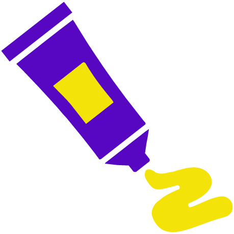
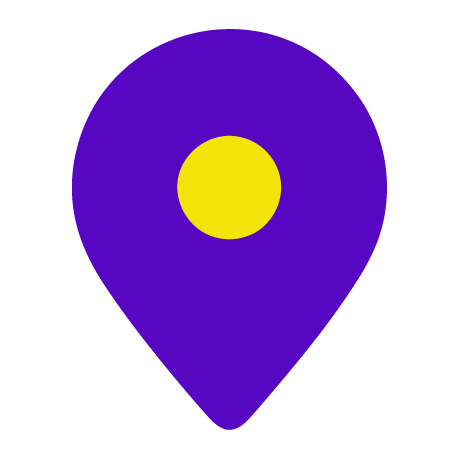
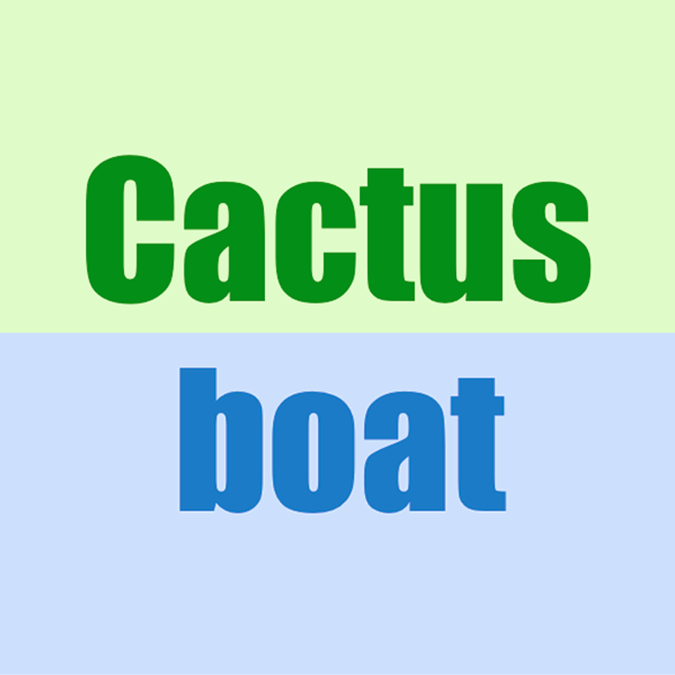
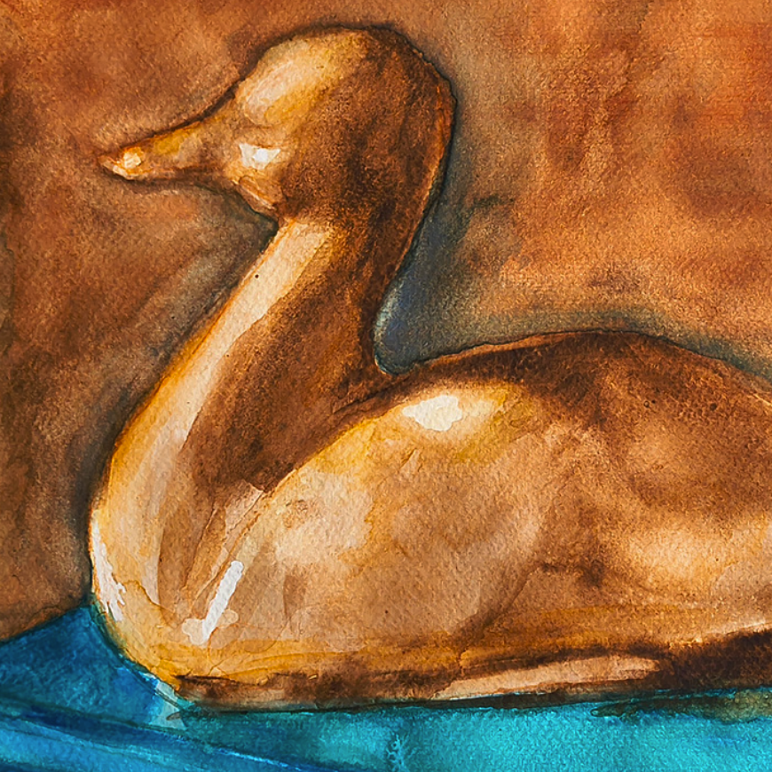

Web Development & Programming
HTML, CSS, SQL, Python
Graphic Design and Web Development
View my workCreative. Detail-oriented. Customer focused. And an all-around super human being, who knows when
to be professional and when to bring the fun. “A delight to work with!” says everyone. I enjoy
combining art and structure to turn out a product that is technically precise and eye-catching.
I'm a die-hard perfectionist with a keen eye for detail, a strong sense of whimsy, and a BA in
fine art and graphic design. Web design is my newest passion, so I'm back in school for another degree!
I'll be completing my studies at NOVA in the coming year.
I love cats, playing music, hiking, mystery novels, horror movies, karaoke, and ice cream.
HTML, CSS, SQL, Python
Adobe CS, Canva

painting & illustration
Content creation, prototyping
PowerPoint, Keynote

ArcGIS
AI-assisted content generation/layout.
View Discount Bats!
Responsive layout with three breakpoints.
View Cactusboat
Responsive sizing using media queries.
View Watercolor Portfolio